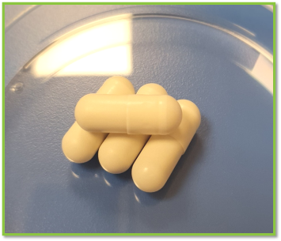

Trasplante de Microbiota Fecal (TMF)
El TMF consiste en transferir microbiota intestinal procedente de un donante sano al intestino de un paciente, con el objetivo de restaurar el equilibrio perdido. Es el tratamiento más eficaz para la infección recurrente por C. difficile, con tasas de resolución muy elevadas.
Evidencia y seguridad
Numerosos estudios han demostrado que el TMF es seguro y altamente eficaz en pacientes con recurrencias múltiples. También se investiga su posible utilidad en otras enfermedades, aunque actualmente solo está reconocido para la infección recurrente por C. difficile.
¿Cómo se realiza?
- Selección estricta de donantes mediante cuestionarios y pruebas analíticas.
- Procesamiento de la muestra para concentrar la microbiota y eliminar impurezas.
- Administración por colonoscopia, cápsulas, enemas o sondas gastrointestinales.
El Hospital General Universitario Gregorio Marañón dispone de banco de heces y TMF en cápsulas, lo que facilita el acceso y la seguridad del procedimiento.
Preparación y recuperación
El paciente suspende antibióticos 24–48 horas antes. La recuperación suele ser rápida, con molestias leves y transitorias según la vía de administración.
Trasplante de Microbiota Fecal (TMF)
¿En qué consiste?
Vías de administración
- Colonoscopia
- Cápsulas orales
- Enema
- Sonda gastrointestinal
Proceso y preparación
- Selección y análisis del donante
- Procesamiento de la muestra
- Control y seguimiento
Qué aporta
- Resuelve la infección recurrente
- Recuperación rápida
- En investigación para otras enfermedades
Único uso reconocido: infección recurrente por C. difficile
